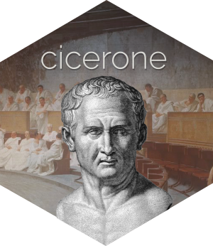
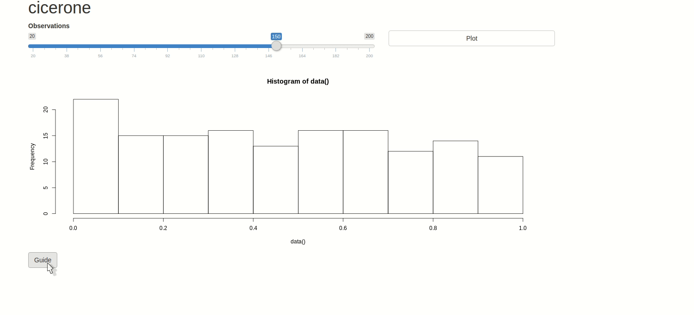

Guided Tours for Shiny


A convenient API to create guided tours of Shiny applications using driver.js.
Why cicerone?
There are already R packages that let you create a guide to your Shiny application. Where cicerone differs is that it allows you to leave your actual application intact; keeping the guide separate from the app.
Installation
You can install the stable version from CRAN with:
install.packages("cicerone")
You can install the development version from Github with:
# install.packages("remotes")
remotes::install_github("JohnCoene/cicerone")